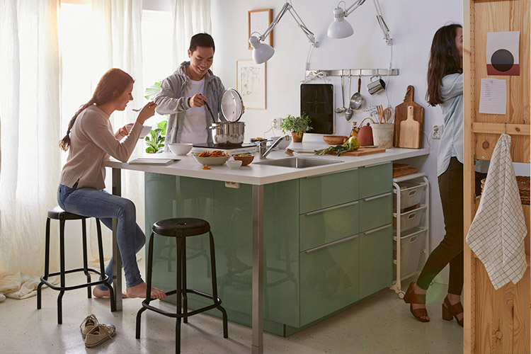
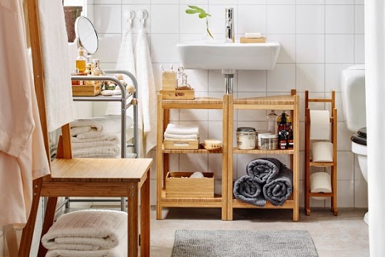

.png)
Decoração
 - Cópia.png)
.png)
Divisões
Todas as divisões são importantes:
- A paleta crómatica é muito imporatnte para tudo parecer harmonioso;
- Até espaços como a casa de banho ou a despença são importantes;
- A decoração de todas as divisões deve ter uma linha continua;
- Planificar a disposição dos móveis faz toda a diferença;
- Ter arrumação por toda a casa é muito eficiente;
- A iluminação é uma das coisas mais importantes numa casa;

 - Cópia.png)
.png)

Acessórios
Essenciais de Decoração:
- Plantas
- Velas
- Molduras
- Tapestes
- Espelhos
- Jarras
Arrumação
A arrumação é muito imporatnte uma casa arrumada é uma casa equilibrada.
.png)
.png)
.png)
.png)
Têxtil
Design
Nesta secção iremos falar sobre Design
| Design | |||||
|---|---|---|---|---|---|
| Disivões | Arrumação | Acessórios | Têxtil | Cores | Iluminação |
| Sala de Estar | Sapateira, aparador, mesa de centro | Plantas, esculturas, velas | Almofadas, cortinados, carpete | Tons neutros, com acessórioss contrastantes | Candeeiros de teto e de pé |
| Quartos | Estantes, suporte para cabides, cestos | Velas, biombo, molduras, espelhos | Almofadas, mantas, cortinados e tapetes | Cores contrastantes e papel de parede | Candeeiros de parede e de teto |
| Cozinha | Ilha, armários superiores, cestos | Jarras, suporte para especiarias | Tolha de Mesa e cortinados | Cores claras ou contrastantes | Candeeiros de teto |
| Casa de banho | Armários de parede, cestos | Plantas, espelho, | Cortina de banho, tapetes, toalhas | Cores neutras ou tons pastel | Candeeiros de teto |
| Hall de entrada | Banco com arrumação, cabide, aparador | Vitrine de exposição, esculturas | Mantas, tapetes, almofadas | Cor forte numa das paredes | Candeeiro de mesa, candeeiro de teto |
| Jardim | Pufes com arrumação e sofá | Plantas, cestas | Almofadas, mantas | Tons quentes | Candeeiro exterior |